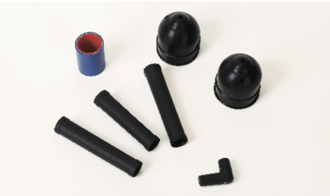

阻燃胶
产品介绍


主要特征
- 具有较好的物理机械性能、电性能、良好的阻燃性和自熄性
- 耐高温阻燃防火硅橡胶，3mm试片可达到国家标准规定的FV-1级
- 3mm试片阻燃性可达到国家标准GB/T10707-2008所规定的FV-O级
- 产品符合ROHS要求
主要技术指标
| 项目 | 指标 | 测试标准 | |||||
|---|---|---|---|---|---|---|---|
| NE-Z130 | NE-Z140 | NE-Z150 | NE-Z160 | NE-Z170 | NE-Z180 | ||
| 外观 | 白色，无明显机械杂质 | 目视检测 | |||||
| 密度 (g/cm³) | 1.32 ~ 1.38 | 1.37 ~ 1.43 | 1.40 ~ 1.46 | 1.42 ~ 1.48 | 1.45 ~ 1.51 | 1.47 ~ 1.53 | GB/T 533-2008 |
| 硬度 (邵氏A) | 32±2 | 40±2 | 50±2 | 60±2 | 70±2 | 78±2 | GB/T 531.1-2008 |
| 拉伸强度 (MPa) ≥ | 3.5 | 4.5 | 6.0 | 5.5 | 5.0 | GB/T 528-2009 | |
| 扯断伸长率 (%) ≥ | 400 | 330 | 280 | 200 | 170 | ||
| 扯断永久变形 (%) ≤ | 6 | 8 | 7 | 6 | 5 | ||
| >撕裂强度B型 (kN/m) ≥ | 12 | 13 | 15 | 13 | GB/T 529-2008 | ||
| 阻燃性，级, 3mm | FV-0 | GB/T 10707-2008 | |||||
| 项目 | 指标 | 测试标准 | |||
|---|---|---|---|---|---|
| NE-Z250 | NE-Z260 | NE-Z270 | NE-Z280 | ||
| 外观 | 白色, 无明显机械杂质 | 目视检测 | |||
| 密度 (g/cm³) | 1.40 ~ 1.46 | 1.42 ~ 1.48 | 1.45 ~ 1.51 | 1.47 ~ 1.53 | GB/T 533-2008 |
| 硬度 (邵氏A) | 50±2 | 60±2 | 70±2 | 80±2 | GB/T 531.1-2008 |
| 拉伸强度 (MPa) ≥ | 6.0 | 5.5 | 4.5 | GB/T 528-2009 | |
| 扯断伸长率 (%) ≥ | 330 | 280 | 200 | 180 | |
| 扯断永久变形 (%) ≤ | 12 | 10 | |||
| 撕裂强度B型 (kN/m) ≥ | 15 | 13 | GB/T 529-2008 | ||
| 阻燃性，级, 3mm | FV-0 | GB/T 10707-2008 | |||
| 项目 | 指标 | 测试标准 | |||
|---|---|---|---|---|---|
| NE-Z141 | NE-Z151 | NE-Z161 | NE-Z171 | ||
| 外观 | 白色, 无明显机械杂质 | 目视检测 | |||
| 密度 (g/cm³) | 1.34 ~ 1.40 | 1.38 ~ 1.44 | 1.40 ~ 1.46 | 1.44 ~ 1.50 | GB/T 533-2008 |
| 硬度 (邵氏A) | 40±3 | 50±3 | 60±3 | 70±3 | GB/T 531.1-2008 |
| 拉伸强度 (MPa) ≥ | 5.0 | 6.0 | 5.5 | GB/T 528-2009 | |
| 扯断伸长率 (%) ≥ | 400 | 350 | 300 | 220 | |
| 扯断永久变形 (%) ≤ | 8 | 7 | 6 | ||
| 撕裂强度B型 (kN/m) ≥ | 13 | 15 | 13 | GB/T 529-2008 | |
| 阻燃性，级, 3mm | FV-0 | GB/T 10707-2008 | |||
| 项目 | 指标 | 测试标准 | ||||
|---|---|---|---|---|---|---|
| NE-Z540 | NE-Z550 | NE-Z560 | NE-Z570 | NE-Z580 | ||
| 外观 | 白色, 无明显机械杂质 | 目视检测 | ||||
| 密度 (g/cm³) | 1.37 ~ 1.43 | 1.40 ~ 1.46 | 1.42 ~ 1.48 | 1.45 ~ 1.51 | 1.47 ~ 1.53 | GB/T 533-2008 |
| 硬度 (邵氏A) | 40±3 | 50±3 | 60±3 | 70±3 | 78±3 | GB/T 531.1-2008 |
| 拉伸强度 (MPa) ≥ | 4.0 | 5.0 | GB/T 528-2009 | |||
| 扯断伸长率 (%) ≥ | 350 | 300 | 250 | 200 | 150 | |
| 扯断永久变形 (%) ≤ | 8 | 7 | 6 | 5 | ||
| 撕裂强度B型 (kN/m) ≥ | 12 | 14 | 12 | GB/T 529-2008 | ||
| 阻燃性，级, 3mm | FV-0 | GB/T 10707-2008 | ||||
| P项目 | 指标 | 测试标准 | ||
|---|---|---|---|---|
| NE-Z662 | NE-Z663 | |||
| 外观 | 透明，明显机械杂质 | 目视检测 | ||
| 密度 (g/cm³) | 1.16 ~ 1.20 | GB/T 533-2008 | ||
| 硬度 (邵氏A) | 60±3 | 66±5 | GB/T 531.1-2008 | |
| 拉伸强度 (MPa) ≥ | 9.0 | GB/T 528-2009 | ||
| 扯断伸长率 (%) ≥ | 500 | 400 | ||
| 撕裂强度B型 (kN/m) ≥ | 25 | 30 | GB/T 529-2008 | |
| 老化试验 200°C * 240h | 拉伸强度, Mpa≥ | 7.0 | GB/T 528-2009 | |
| 扯断伸长率, %≥ | 200 | |||
| 阻燃性能 | 氧指数, %≥ | 28 | ASTM D2863 | |
| 阻燃等级 | 3mm, FV-1 | GB/T 10707-2008 | ||
● 上述表中所列物性数据仅供参考。
● 硫化条件: 175°C × 5min，液体硫化添加剂比例为1.0%，主要成分2，5-二甲基-2，5-二（叔丁基过氧基）己烷。
● 随货的检测报告仅是质检部依据公司硫化条件与检测方法测试所得；由于硫化条件与检测方法的不同，我们不能保证双方能得到同样的测试结果，建议使用者以自己的检测条件下得出的检测数据作为使用性能参考；以上任何性能数据以及适用建议，只是对公司产品使用性能的一个使用参考，而不是公司产品在特定应用下的有效性或通用性的担保。